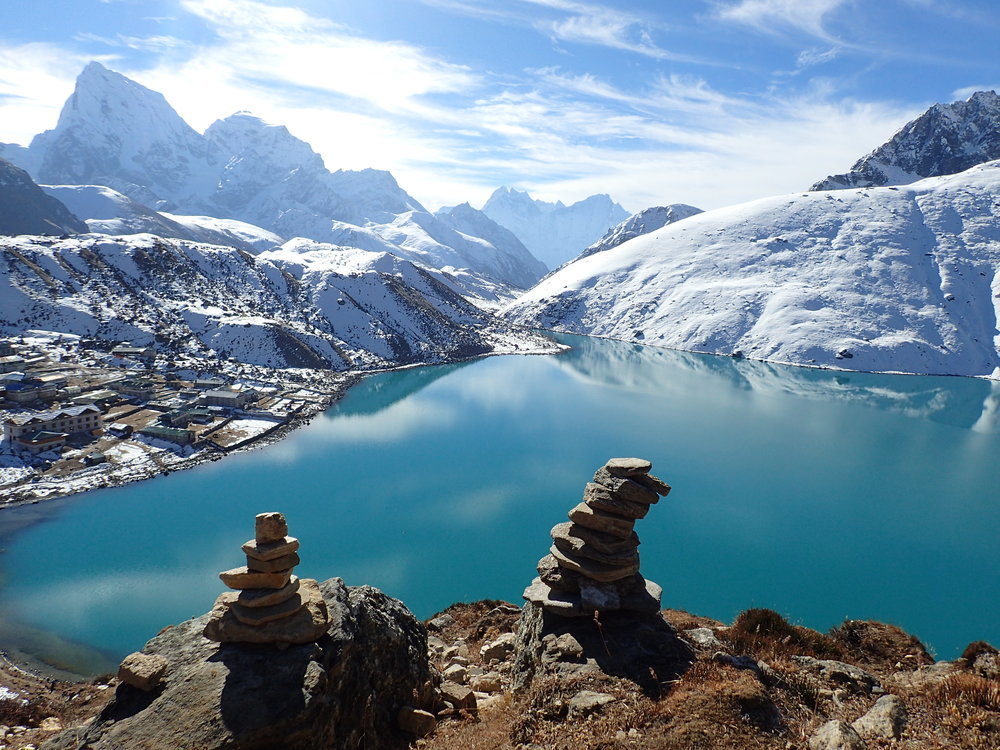

Dante's Choice
- Gokyo Lakes, Nepal
- New Orleans, USA
- S. Lake Tahoe
Gokyo Lakes- Nepal
If you want to reach Gokyo Lake, Stay in Namche 3-4 days minimum for the best acclimatization, making some tours to Monk (4000), Khumjung (3800), Tengboche. For a beautiful 3 day trek spend 1 night - Dole, second night - Macchermo. There are 6 lakes there. Usually tourists see only first 3 of them, because Gokyo village situated on the shore of 3-d lake. But 4-th, 5-th and 6-th lakes are fantastically beautiful and I strongly recommend you to visit them. * 4-th lake is just 1 hour to go by the path from the Gokyo village up. It's very easy and you can do it yourself without any guide. *5-th lake is 2 hours more up, and I recommend you to take a guide to go there, because it's quite easy to loose way back, especially if fog will come. *6-th lake - is extremely impressive, you will remember it for all your life. It's 2 more hours. The altitude there is only 5300 meters, so if you spend 3-4 days in Gokyo village and have a normal acclimatization, it's not problem. Be VERY attentive with acclimatization. Don't rush to go up if you feel yourself not good - it's really dangerous. I think, that if you want to make a safe trip to Gokyo lakes, you need around 20 days for all the tour from Lukla to Lukla, not less.
New Orleans- Louisiana

Love the French Quarter - so full of history and city culture.lots to do here. I think this is up there as one of my top favourite cities. Loved the architecture, Jackson square, the food, the atmosphere. Dined on one the many balconies and loved it. Such a laid back casual vibe here. Get off of Bourbon and head to Marigny and find the local blues type experience. You will Feel safe during the day and strangely at night too butdon’t drink too much on Bourbon and keep your wits about you at night.
S. Lake Tahoe

South Lake Tahoe is a California resort city on Lake Tahoe, in the Sierra Nevada mountains. It’s known for nearby ski resorts and beaches, like El Dorado Beach, with its picnic areas. The city’s restaurants and bars merge with the casinos of adjacent Stateline, Nevada. Van Sickle Bi-State Park has wooded trails and lake views. West of the city, Emerald Bay State Park includes Vikingsholm, a 1929 Nordic-style mansion.
Various text